01Reveal · Ring frame
The ring frame.
Where roving becomes yarn. Machines like this have been bought, sold and set to work by him in mills across Pakistan.
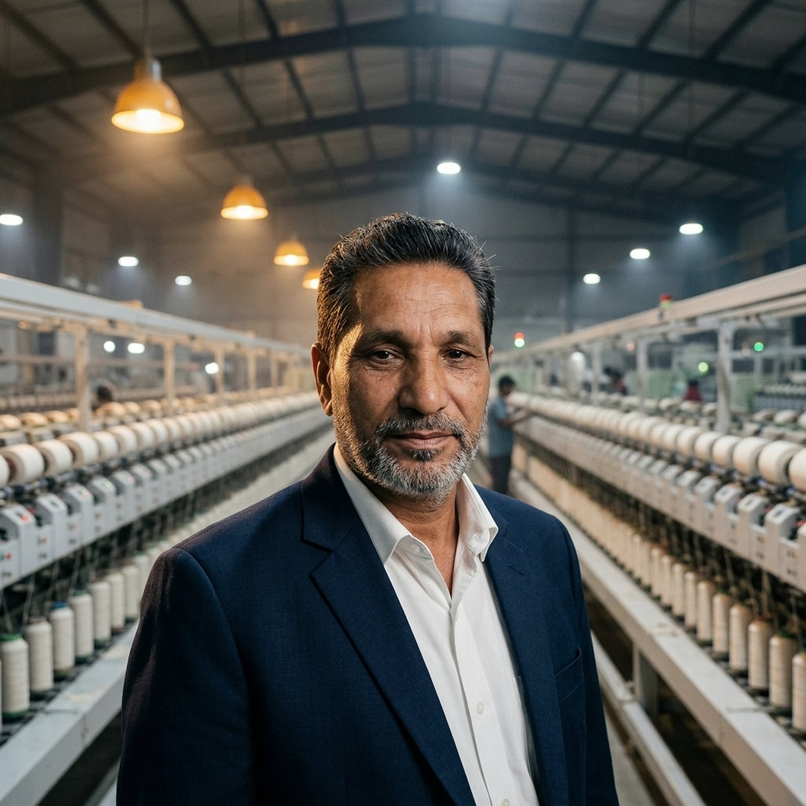
Nearly four decades in Pakistan’s spinning industry. Machinery bought, sold, imported and set to work in mills across the country.Textile machinery ki pehchaan, 1988 se.
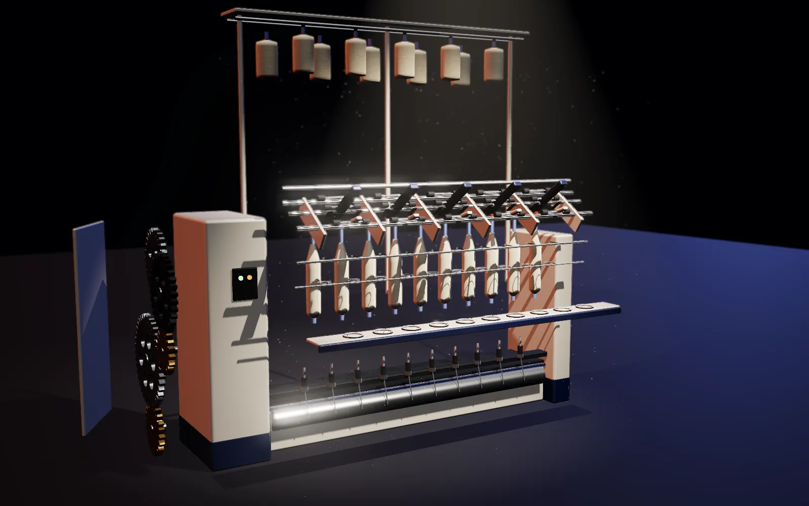
Where roving becomes yarn. Machines like this have been bought, sold and set to work by him in mills across Pakistan.
Creel, drafting, spindles, ring rail, headstock. He studied every machine in the spinning line: how it runs, how it fails, and how it is put right.
Valuation starts in the detail. Make, model year, hours, condition: anyone can tell you a machine’s price. Only experience tells you its worth.
A small traveller runs round a polished steel ring and puts the twist into every metre of yarn. Small parts decide the quality of the whole mill.
Buying, selling or valuing spinning machinery? Get a straight answer from someone who has worked on these machines since 1988.
The right part, delivered fast, to mills that could not afford a stopped machine. Trust in small parts started everything.
Mills that trusted his parts began to trust his judgement on whole machines, from blowroom lines to ring frames.
Entire spinning units valued, bought, sold and relocated, for owners across Pakistan and for large textile groups.
Machinery imported for clients from Turkey, Egypt and Russia. Each gear drives the next.
He learned the trade inside the mills before he ever put his own name on a door. Everything since has been built on that first education.Pehle kaam seekha, phir apna kaam shuru kiya.
His working life began on the open-end spinning floors of Karachi. From there he studied every machine in the spinning line: how it runs, how it fails, and how it is put right.
Har machine ko andar se samjha.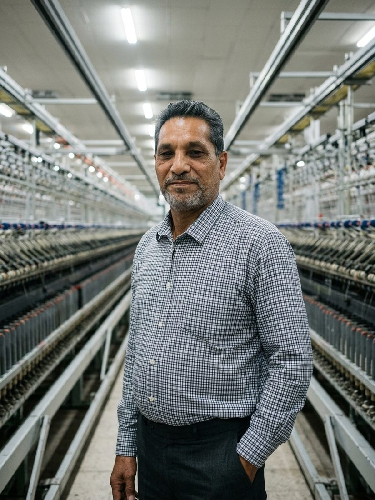
In 1988 he founded M Tech in Karachi, starting with open-end spinning. The first trade was spare parts: the right part, delivered fast, to mills that could not afford a stopped machine.
Bunyaad: bharosa aur waqt ki pabandi.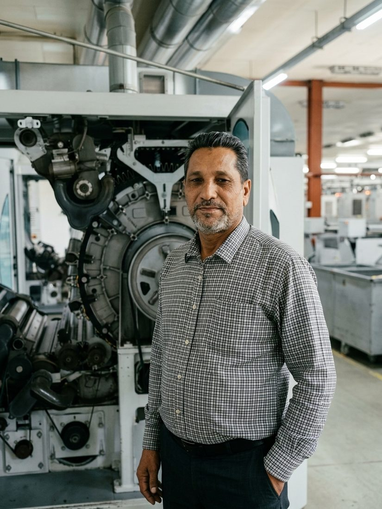
Mills that trusted his parts began to trust his judgement on whole machines. M Tech moved into buying and selling complete spinning machinery, from blowroom lines to ring frames.
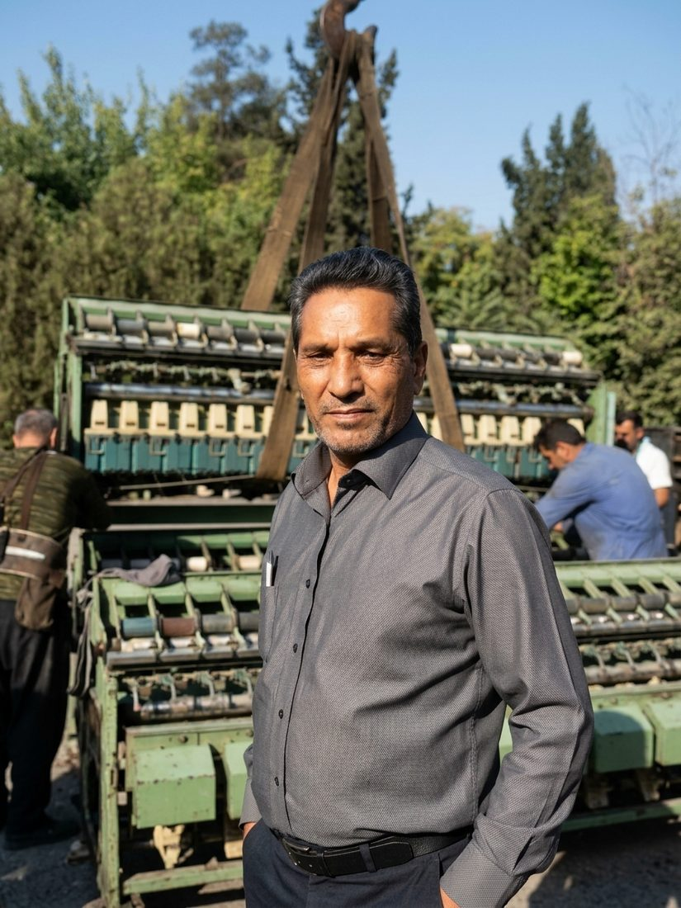
Then came entire spinning units: valued, bought, sold and relocated. More than fifty mills have passed through his hands, many of them for Pakistan’s largest textile groups.
Poori mill, aik nazar mein.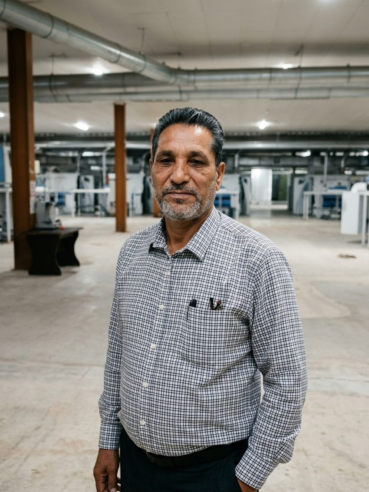
For clients who need more than the local market offers, M Tech imports machinery from Turkey, Egypt and Russia. Most of the trade is in quality pre-owned machines; new machinery is imported on request.
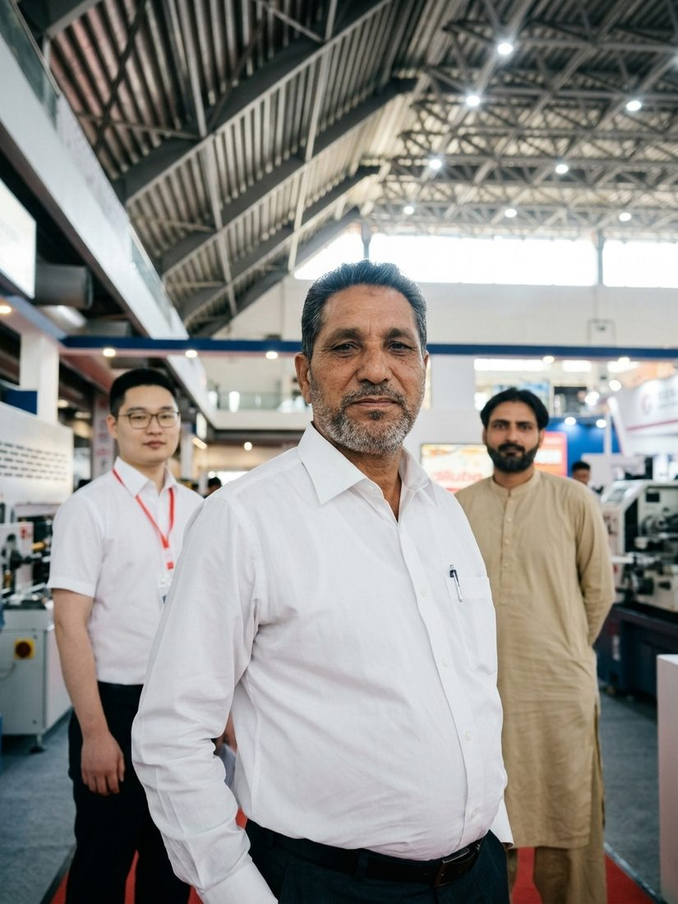
Head office in Manga Mandi, Lahore. Warehouse in Darul Ehsan Town, Faisalabad. And a name that spinning mills across Pakistan already know.
Before his own business, he learned the trade working for others, on the spinning floors.
He founded M Tech in Karachi in 1988, starting with open-end spinning.
From open-end he went on to master all spinning machinery: blowroom, carding, drawing, combing, simplex, ring spinning and winding.
Spare parts supply first, then large machinery, then whole factories and complete mills.
Karachi, Hyderabad, Nooriabad, Mirpur, Faisalabad and Lahore: he has worked across the country’s industrial cities.
For clients who need more than the local market offers, he imports machinery from Turkey, Egypt and Russia.
He travels to textile machinery exhibitions, including Singapore, to see what is next for the industry.
He advises factory owners and has worked with large Pakistani textile groups. M Tech office in Manga Mandi, Lahore; godown in Faisalabad.
Makers, model years, condition, true value
Anyone can tell you a machine’s price. Only experience tells you its worth.Qeemat har koi bata deta hai, asal qadar sirf tajurba batata hai. Abdul Rasheed Gill
Factory owners across Pakistan come to him for a second opinion, and many keep coming back. The advice covers every part of a spinning business.Faisla karne se pehle, mashwara.
What a machine is really worth: its make, model year, hours, condition and the price it should fetch today. Buyers and sellers both rely on that number.
Planning a spinning unit from the ground up: the right machine mix, line balancing, layout and sourcing, matched to the count and the budget.
He knows spinning production methods closely, and helps running mills raise output and quality from the machines they already own.
Single machines, complete lines or entire mills, handled from first inspection to final dispatch.
From Karachi to the Punjab, in every province and nearly every city with a textile industry. Abroad, machinery is sourced from Turkey, Egypt and Russia.Pakistan ka har sooba, har industrial shehar.
From mill floors, machinery yards and exhibitions. A regular at ITMA and textile machinery shows at home and abroad, including Singapore.Kaam dafter se nahi, mill ke floor se hota hai.
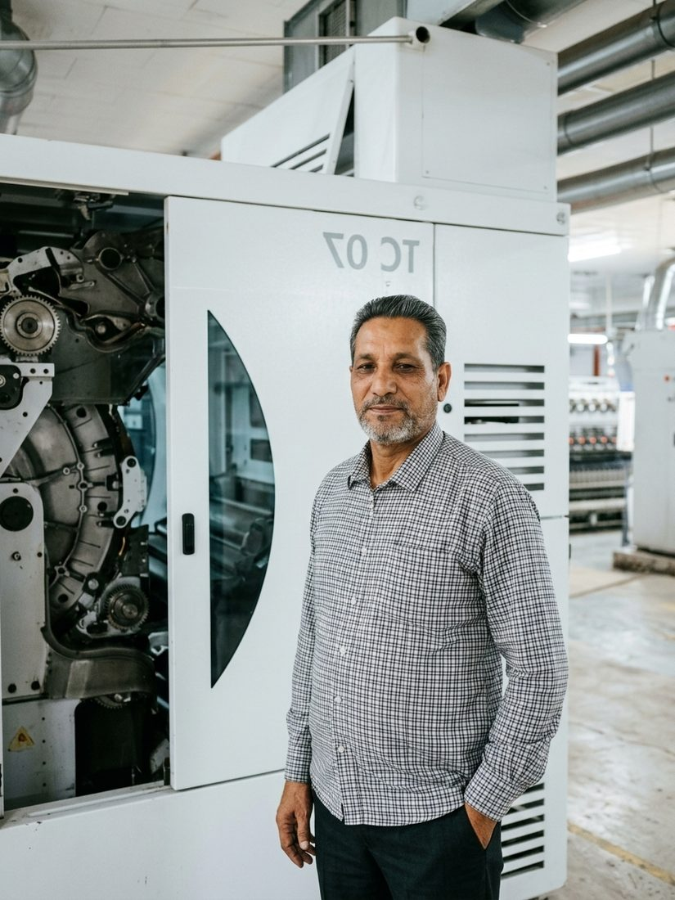
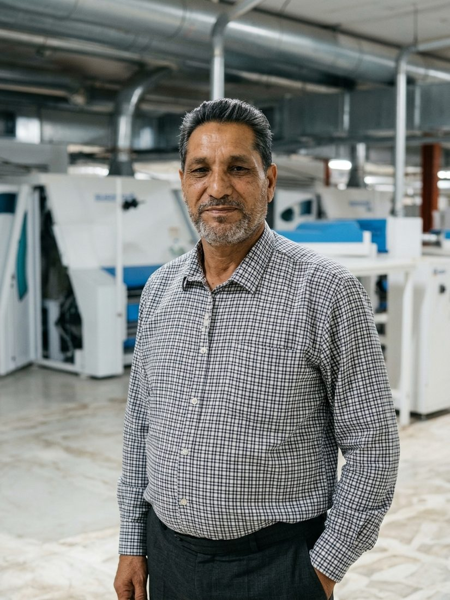
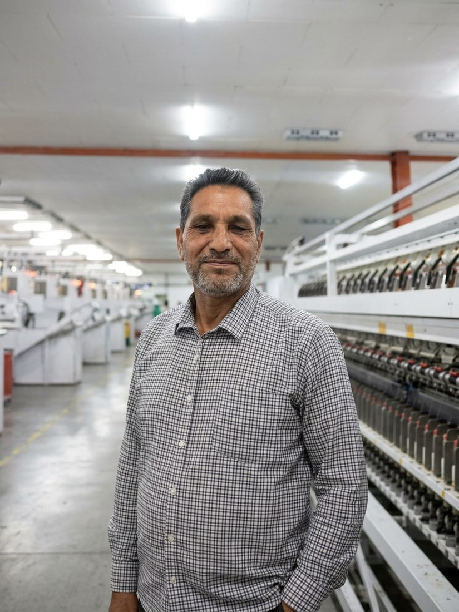
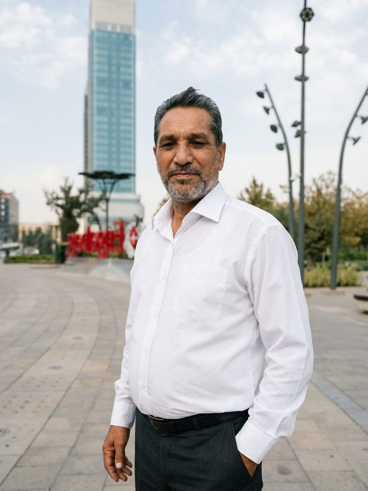
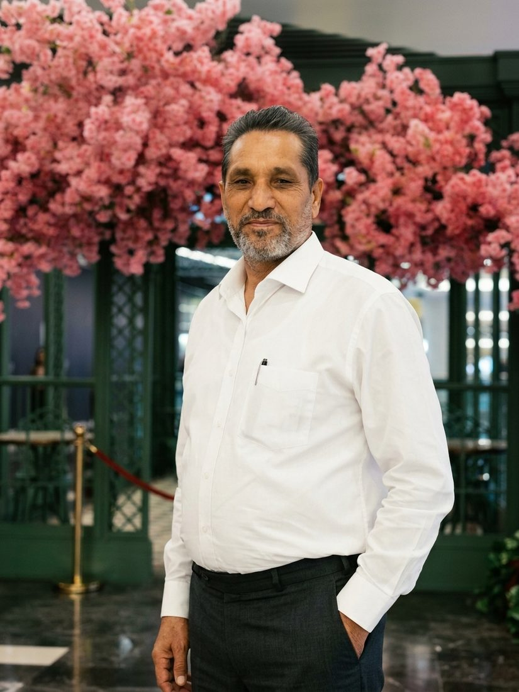
For machinery, complete mills or a second opinion before you buy, reach him directly.